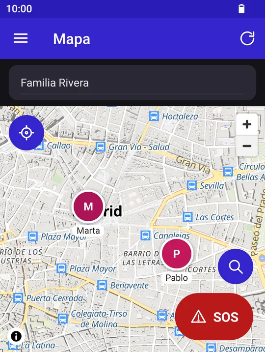

Android
Your family on the map, in a closed, end-to-end encrypted group.
Family Together lets the people in a closed group (your family, your friends) see where each other is. The map shows each member's last position with the time and their phone's battery level, and in the history you can see where each person went over the last 30 days, with the route snapped to the streets and the stops marked.
You can create zones (home, school, work) and choose whose arrivals and departures you want to be alerted about. The red button sends an SOS to your groups, with your position, even if sharing is paused. And when you want some privacy, you pause a group for an hour, until tomorrow or until you resume it.
No account or password is needed: the first time you open it you only choose the name others will see. Everything you write and your coordinates are encrypted on the phone with a key that only the group's phones have, so the server stores data it cannot read. Free to use, with no ads, no analytics and open source code.
Platforms
Android
Download
License
MIT, free to use
Source code
Support
There is no account or password: your user is anonymous, and only if you want do you link Google or Microsoft to recover it on another phone. Your position, the time and the battery level are shared with your groups when you move, and your coordinates, your name, your avatar and the names of groups and zones are end-to-end encrypted on the phone with the group key: the server stores data it cannot read. History is deleted automatically after 30 days and you can delete yours whenever you like. Notifications are carried by Google's notification service, with identifiers only, never your position or readable text. Routes snapped to the streets are computed on the phone: the map service is only asked for fixed areas of the map, never the route, and it can be turned off. No ads, no analytics and no trackers. The third parties involved are listed in the privacy policy.
Screenshots

The guide explains how to set it up, every screen and option, and the most common questions.